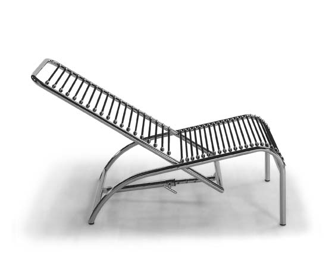

Deckchair 808
Year: 1930
Materials: polished chrome-plated or lacquered steel tube structure, cotton cloth covered elastic cord seat.
Measures: 55 W. x 120 D. x 100 H. cm
Herbst was the forerunner of the use that would have been made in the twenties of materials: the result of industrial development, such as steel and plastic.